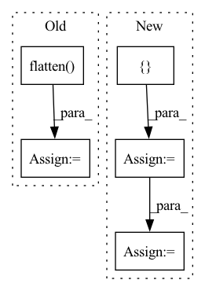

Pattern ID :22457
Before Change
num_features = len(cat_cols + numeric_cols)
if indices_to_calc_neighbors_for is not None:
rows_to_calc_neighbors_for = \
np.argwhere([x in indices_to_calc_neighbors_for for x in data.index]).flatten()
else:
rows_to_calc_neighbors_for = list(range(num_samples))
num_indices_to_calc = len(rows_to_calc_neighbors_for)After Change
num_samples = data.shape[0]
if samples_to_calc_neighbors_for is not None:
data = pd.concat([ data, samples_to_calc_neighbors_for = cat_data[num_samples:]
numeric_data = numeric_data[:num_samples]
cat_data = cat_data[:num_samples]
In pattern: SUPERPATTERN
Frequency: 3
Non-data size: 5
Instances Fragment ID: 71021658
Project Name: deepchecks/deepchecks
Commit Name: e9b85cbcf3518ab440a10f9198953b75108a97fb
Time: 2022-08-31
Author: 92314933+nirhutnik@users.noreply.github.com
File Name: deepchecks/utils/gower_distance.py
M Class Name: AnonimousClass
N Class Name: AnonimousClass
M Method Name: calculate_nearest_neighbors_distances(5)
N Method Name: calculate_nearest_neighbors_distances(5)
M Parent Class:
N Parent Class:
M File Name: deepchecks/utils/gower_distance.py
N File Name: deepchecks/utils/gower_distance.py
M Start Line: 59
M End Line: 117
N Start Line: 59
N End Line: 130
Before Change
raise ValueError(f"Pooling function {self._pooling_func_name} is not yet supported!")
// out: (BB, embedding_dim, 1)
out = torch.flatten( out, start_dim=-2)
// out: (BB, embedding_dim)
out = self.fc1(out)
if self._use_batch_norm and batch_size > 1:After Change
// Pooling
// out: (BB, embedding_dim, NN)
masking_input = { "in_tensor": out.transpose(2, 1)}
if self.use_masking:
masking_input["mask_tensor"] = masking_tensor
out = self.pooling_block(masking_input)["masking_out"]
// output_tensor: (BB, embedding_dim)
// out: (BB, embedding_dim) Fragment ID: 71021712
Project Name: enlite-ai/maze
Commit Name: 53a9f4e4997b8a5451f14fb57dd6c5cb9becd110
Time: 2021-04-15
Author: office@enlite.ai
File Name: maze/perception/blocks/feed_forward/point_net.py
M Class Name: PointNetFeatureTransformNet
N Class Name: PointNetFeatureTransformNet
M Method Name: forward(3)
N Method Name: forward(2)
M Parent Class: nn.Module
N Parent Class: nn.Module
M File Name: maze/perception/blocks/feed_forward/point_net.py
N File Name: maze/perception/blocks/feed_forward/point_net.py
M Start Line: 93
M End Line: 127
N Start Line: 80
N End Line: 134
Before Change
element_numbers = np.arange(output_elements).reshape(
output_columns, output_rows)
strided_rows = element_numbers[::stride, ::stride].flatten()
// TODO: finish me!
indices = convolution_matrix.coalesce().indices().numpy()
values = convolution_matrix.coalesce().values().numpy()
mask = []
non_zero_row_entries = indices[0, :]
// lambda ?
for entry in non_zero_row_entries:
if entry in strided_rows:
mask.append(True)
else:
mask.append(False)
mask = np.array(mask)
strided_indices = indices[:, mask]
strided_values = values[mask]
strided_matrix_2 = torch.sparse_coo_tensor(
strided_indices, strided_values, dtype=dtype)
strided_matrix = convolution_matrix.to_dense()[strided_rows, :]
return strided_matrix.to_sparse()
After Change
indices = convolution_matrix.coalesce().indices().numpy()
values = convolution_matrix.coalesce().values().numpy()
mask = []
strided_row_indices = []
non_zero_row_entries = indices[0, :]
counter = 0
previous_entry = 0
for entry in non_zero_row_entries:
if entry in strided_rows:
mask.append(True)
if previous_entry != entry:
counter += 1
strided_row_indices.append(counter)
else:
mask.append(False)
previous_entry = entry
mask = np.array(mask)
strided_row_indices = np.array(strided_row_indices)
strided_col_indices = indices[1, mask]
strided_indices = np.stack([strided_row_indices, strided_col_indices], 0)
strided_values = values[mask]
strided_matrix = torch.sparse_coo_tensor(
strided_indices, strided_values, dtype=dtype).coalesce() Fragment ID: 71021654
Project Name: v0lta/pytorch-wavelet-toolbox
Commit Name: f659f1a0eacbd03f1438d0c70729ce7e95eb9ea0
Time: 2021-09-13
Author: moritz.wolter@scai.fraunhofer.de
File Name: src/ptwt/matmul_transform_2d.py
M Class Name: AnonimousClass
N Class Name: AnonimousClass
M Method Name: construct_strided_conv2d_matrix(5)
N Method Name: construct_strided_conv2d_matrix(5)
M Parent Class:
N Parent Class:
M File Name: src/ptwt/matmul_transform_2d.py
N File Name: src/ptwt/matmul_transform_2d.py
M Start Line: 80
M End Line: 113
N Start Line: 88
N End Line: 127